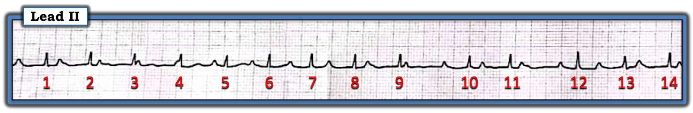
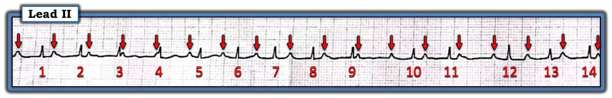
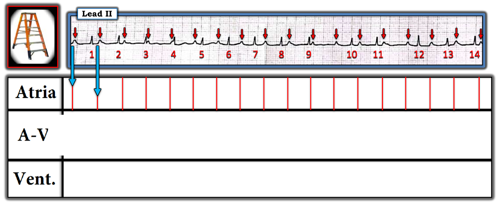
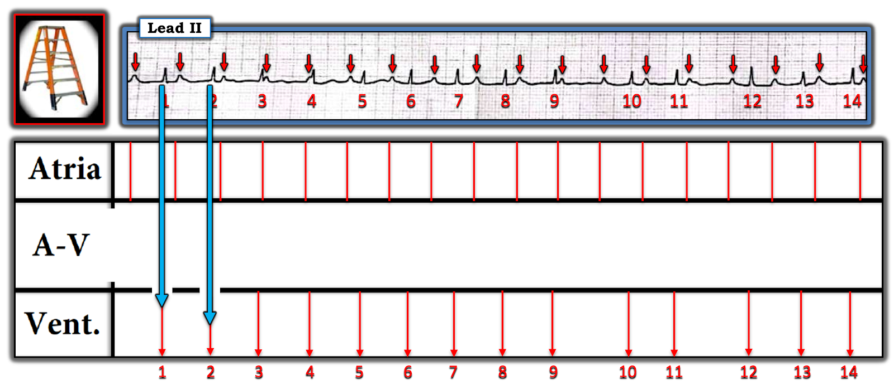
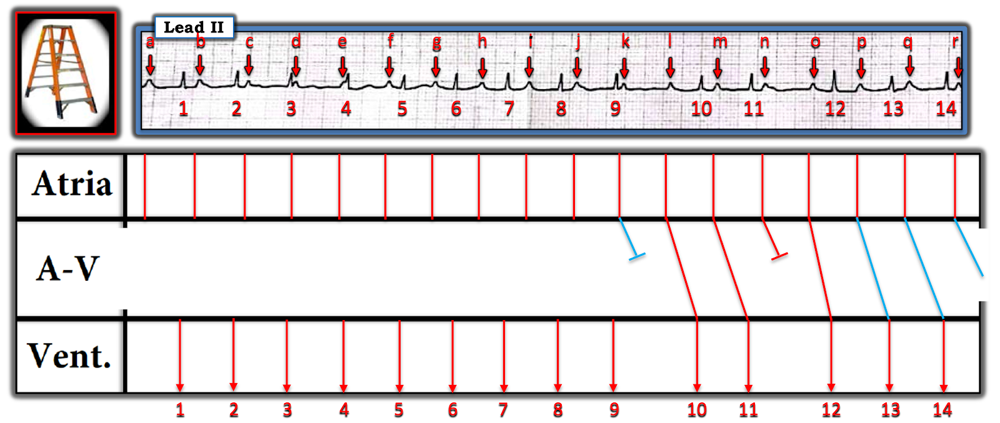
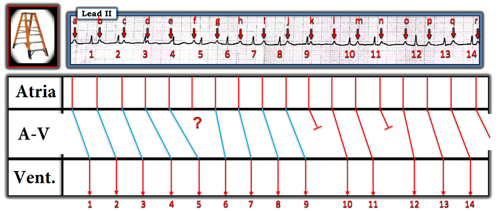
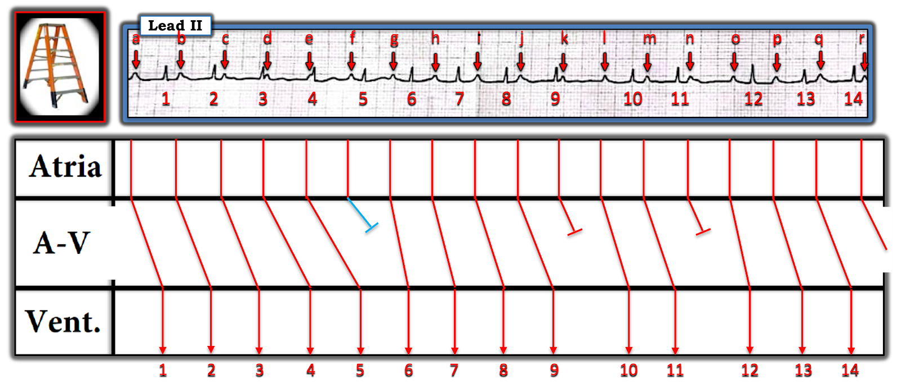
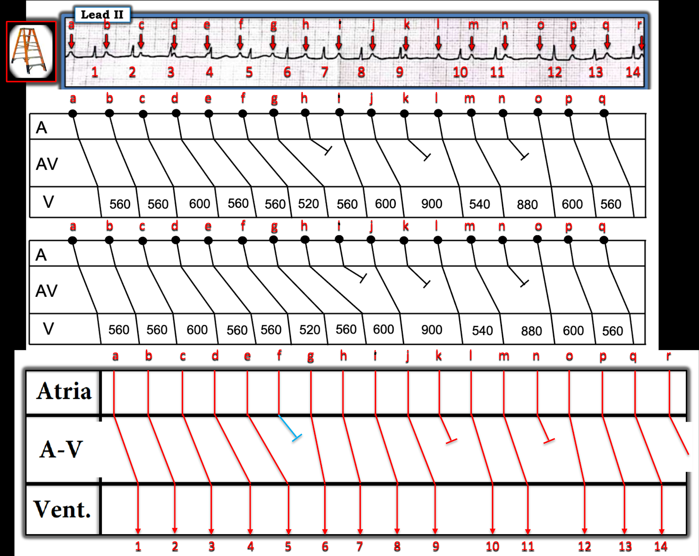

ECG Blog #389 — Một câu nói của Sherlock Holmes
Dải nhịp chuyển đạo II dài trong Hình 1 — được ghi từ một phụ nữ 30 tuổi trước đó khỏe mạnh, đến khám vì đau bụng mới xuất hiện. Dấu hiệu sinh tồn ổn định — và bệnh nhân không có bụng ngoại khoa cấp.
CÂU HỎI:
- Có blốc AV hoàn toàn không?
- Nếu không — BẠN sẽ đọc nhịp này như thế nào?
- Điều gì bất thường ở rối loạn dẫn truyền này?
- (GỢI Ý: Trước đây tôi chưa từng thấy hiện tượng này! )
- Bạn sẽ điều trị rối loạn nhịp này NHƯ THẾ NÀO?
=============================
LƯU Ý: Phần dưới đây là “quá trình tư duy” của tôi khi đọc nhịp hôm nay — kèm nhiều ĐIỂM THEN CHỐT (PEARL) rải rác dọc đường.
- XIN NHẤN MẠNH: Trong “thời gian thực” — tôi đọc nhịp này mất ít thời gian hơn thời gian cần để đọc phần bàn luận cố ý viết dài của tôi dưới đây.
- T.B. (P.S.): Đây là một bản ghi khó! Nó làm nổi bật nhiều khái niệm quan trọng và hữu ích trong đọc rối loạn nhịp — nhưng Xin Báo Trước rằng lời giải đầy đủ ở mức nâng cao!
=============================


Cách tiếp cận CỦA TÔI với nhịp ở Hình 1:
Như trong ECG Blog #185 — tôi ưa dùng Ps, Qs, 3R Approach (cách tiếp cận Ps, Qs, 3R) để đọc nhịp tim — bắt đầu với bất kỳ thông số nào trong 5 Thông số MẤU CHỐT dễ đánh giá nhất trên bản ghi trước mặt:
- Ít nhất là trên dải nhịp một chuyển đạo II ở Hình 1 — Phức bộ QRS có vẻ hẹp.
- Sóng P có hiện diện (Xem ĐIỂM THEN CHỐT #1 dưới đây).
- Nhịp trong bản ghi hôm nay không đều (Regular). Tần số (Rate) của nhịp thay đổi vì sự không đều này — nhưng tần số thất chung có lẽ trong khoảng 90-100/phút.
- LƯU Ý: Chúng ta chưa thể xét thông số cuối cùng trong 5 Thông số MẤU CHỐT — tức là xác định xem sóng P có (hay không) liên quan với các phức bộ QRS kế cận.
ĐIỂM THEN CHỐT #1: Sau khi xét 5 Thông số MẤU CHỐT — bước tiếp theo DỄ NHẤT để xác định cơ chế của một nhịp phức tạp — là đánh dấu các sóng P. Bạn sẽ thấy tôi cũng đánh số các nhát — vì điều này lập tức giúp mọi người cùng chắc chắn rằng chúng ta đang nói về cùng một phần của bản ghi.
- Dùng compa đo (calipers) là cách nhanh nhất (và chính xác nhất) để xác định có một nhịp nền đều hay không. Chỉ cần chọn 2 sóng P liên tiếp mà bạn chắc chắn về vị trí (tức là, Ví dụ — ta thấy rõ 2 sóng P liên tiếp trong khoảng R-R giữa nhát #9 và #10 — hoặc giữa nhát #11 và #12).
- Đặt compa theo một trong các khoảng P-P này — rồi xem liệu bạn CÓ THỂ "dò bước" các sóng P đều (hoặc ít nhất là khá đều) suốt phần còn lại của bản ghi hay không. Các mũi tên ĐỎ ở Hình 2 cho thấy bạn làm được!


Có sóng P nào ở Hình 2 được dẫn truyền không?
Hãy NHÌN lại Hình 2. Giờ đây khi mọi sóng P đã được đánh dấu — Chẳng phải dễ hơn nhiều để nhận ra rằng nhịp nhĩ nền thực sự đều sao?
- Câu hỏi đặt ra lúc này là — Có sóng P nào mà ta thấy ở Hình 2 đang được dẫn truyền xuống thất không?
- NẾU có — Là (những) sóng nào?
LƯU Ý: Có rất nhiều sóng P ở Hình 2 — hầu như tất cả dường như có khoảng PR khác nhau so với các phức bộ QRS kế cận.
- Nhịp này có phải là blốc AV độ 3 không?
ĐIỂM THEN CHỐT #2: Theo định nghĩa — blốc AV độ 3 ( = hoàn toàn) nghĩa là không xung động nhĩ nào (sóng P) được dẫn truyền xuống thất. Do đó — NẾU ta chứng minh được rằng một hoặc nhiều sóng P có được dẫn truyền xuống thất — thì ta đã chứng minh nhịp này không phải blốc AV độ 3.
- ĐIỂM THEN CHỐT là — Hãy tìm một hoặc nhiều khoảng ngưng ngắn trong nhịp! Phần lớn trường hợp — sẽ dễ xác định cơ chế của một rối loạn nhịp phức tạp nhất NẾU có một "quãng nghỉ" trong nhịp, dù sự chậm lại này chỉ thoáng qua.
- Nhìn vào Hình 2 — giờ đây hẳn sẽ dễ thấy có 2 khoảng ngưng ngắn trong nhịp hôm nay (tức là, Chẳng phải khoảng R-R giữa nhát #9-10 và giữa nhát #11-12 rõ ràng dài hơn các khoảng R-R khác trong bản ghi này sao?).
- Tập trung vào điều xảy ra gần cuối 2 khoảng ngưng ngắn này — Chẳng phải có vẻ như một hoặc cả hai sóng P đứng trước nhát #10 và #12 có thể đang được dẫn truyền sao? Đúng là khoảng PR trước nhát #10 và #12 không bằng nhau — nên ta chưa "chứng minh" được rằng các sóng P này được dẫn truyền — nhưng giả định hợp lý nhất là lý do khoảng R-R giữa nhát #9-10 và giữa nhát #11-12 dài ra rõ rệt — là vì một (hoặc cả hai) sóng P xuất hiện ngay trước nhát #10 và #12 với khoảng PR hợp lý đang được dẫn truyền xuống thất!
- XIN NHẤN MẠNH: Nhịp hôm nay quả thực đầy thử thách! Đây không phải là một rối loạn nhịp đơn giản. Dù vậy — bằng cách minh họa cách tiếp cận từng bước của tôi, hy vọng sẽ thấy rõ ngay cả người đọc ít kinh nghiệm hơn cũng có thể thu hẹp chẩn đoán phân biệt bằng cách áp dụng các nguyên tắc cơ bản nằm trong tầm tay của bất kỳ nhân viên cấp cứu nào. Dù vậy — tôi hoàn toàn thừa nhận rằng ở thời điểm này trong quá trình đánh giá, tôi chưa chắc chắn nhịp này là gì.
======================================
CÂU HỎI: Có blốc AV nào ở Hình 2 không?
======================================
TRẢ LỜI = ĐIỂM THEN CHỐT #3: Như mọi nhân viên cấp cứu đều biết — blốc AV có 3 độ. Vậy LÀM SAO xác định có một trong 3 độ blốc AV này hay không?
- Để có blốc AV — nhịp nhĩ phải đều (hoặc ít nhất gần đều, nếu có loạn nhịp xoang nền). Nếu hình dạng sóng P thay đổi — hoặc nếu khoảng P-P rõ ràng không đều — thì có lẽ bạn không đang đối mặt với một dạng blốc AV "thuần túy". (Dĩ nhiên luôn có ngoại lệ — như những ca có blốc AV kèm "những thứ khác", chẳng hạn PAC, PVC, v.v. — nhưng những ngoại lệ này vượt ra ngoài các khái niệm cơ bản tôi trình bày ở đây).
- Dạng blốc AV đơn giản nhất là blốc AV độ 1 — trong đó mọi sóng P đều được dẫn truyền xuống thất. Chỉ là chúng mất lâu hơn để làm việc đó (tức là, Khoảng PR rõ ràng dài hơn 0.20 giây). Dạng blốc AV này thường dễ nhận ra — vì mỗi phức bộ QRS đều có 1 sóng P đi trước với khoảng PR cố định dài hơn 0.20 giây. Đây rõ ràng không phải điều ta thấy ở Hình 2.
- Để có blốc AV độ 2 hoặc độ 3: i) Nhịp nhĩ phải đều (hoặc ít nhất gần đều, nếu có loạn nhịp xoang nền); và, ii) Một hoặc nhiều sóng P đúng lúc không được dẫn truyền xuống thất.
- Điểm MẤU CHỐT: Lý do tôi nhấn mạnh rằng sóng P phải "đúng lúc" thì mới là blốc AV "thuần túy" — là vì điều này loại trừ khả năng nhầm PAC bị blốc hoặc PAC được dẫn truyền với blốc AV.
- ĐIỂM THEN CHỐT là NẾU có một nhịp nhĩ đều (tức là, mọi sóng P đều "đúng lúc" — như các mũi tên ĐỎ ở Hình 2 cho thấy) — thì NẾU có nhiều sóng P hơn phức bộ QRS — ít nhất một số sóng P đúng lúc này không được dẫn truyền xuống thất. Đây là tình huống ở Hình 2. Việc ta thấy 2 sóng P (mũi tên ĐỎ) trong khoảng R-R giữa nhát #9-10 và giữa nhát #11-12 — nghĩa là có ít nhất 2 sóng P đúng lúc không được dẫn truyền — tức là có ít nhất blốc AV độ 2 trong bản ghi hôm nay!
ĐIỂM THEN CHỐT #4: Phần lớn trường hợp, NẾU mức độ blốc AV là hoàn toàn (độ 3) — thì nhịp thất phải đều (hoặc ít nhất khá đều). Đó là vì các nhịp thoát phát sinh từ nút AV, bó His hoặc tâm thất thường là những nhịp khá đều. Có thể có ngoại lệ (tức là, trong lúc hồi sinh tim phổi) — nhưng ngay cả khi đó, thường vẫn có một kiểu đều nhận ra được của nhịp thất.
- "Trang bị" ĐIỂM THEN CHỐT #4 — tôi biết ngay trong vài giây rằng nhịp hôm nay không phải blốc AV hoàn toàn — đơn giản vì các khoảng ngưng nêu trên cho thấy nhịp thất ở Hình 2 chắc chắn không đều!
ĐIỂM THEN CHỐT #5: Dù hoàn toàn thừa nhận sự phức tạp của rối loạn nhịp hôm nay — các suy luận trên (Xem ĐIỂM THEN CHỐT #3 và #4) — cho ta biết có một dạng nào đó của blốc AV độ 2.
- Có 3 Loại blốc AV độ 2. Đó là: i) Mobitz I ( = Wenckebach AV); ii) Mobitz II; và, iii) blốc AV độ 2 với dẫn truyền AV 2:1.
- Bằng phương pháp loại trừ (như đã ôn lại trong ECG Blog #236) — Trong 3 loại blốc AV độ 2 này, bản ghi hôm nay gần như chắc chắn là biểu hiện của một dạng nào đó của Mobitz I = Wenckebach AV vì: i) Phức bộ QRS hẹp; ii) Khoảng PR thay đổi liên tục, trong khi với Mobitz II khoảng này phải cố định; và, iii) Mobitz I phổ biến hơn Mobitz II rất nhiều.
=====================================
Điểm MẤU CHỐT "Cần Nhớ" (Take-Home Point):
NẾU bạn chỉ đi được tới đây trong việc đọc nhịp (tức là, Rằng nhịp hôm nay ở người phụ nữ 30 tuổi trước đó khỏe mạnh, đau bụng mới xuất hiện này — là một dạng nào đó của Wenckebach AV, trong đó QRS hẹp và tần số thất chung thừa đủ) — thế là quá đủ để xử trí ban đầu thích hợp cho bệnh nhân này!
- Phần lớn trường hợp — blốc AV độ 2 loại Mobitz I (Wenckebach AV), trong đó tần số thất thừa đủ — là một rối loạn dẫn truyền tương đối lành tính. Điều này càng đúng khi bệnh nhân là người trẻ trước đó khỏe mạnh, đến khám với một nguyên nhân tiềm tàng làm tăng trương lực phế vị (như trường hợp người phụ nữ 30 tuổi đau bụng mới xuất hiện này).
- ĐIỂM THEN CHỐT #6: Như trong ECG Blog #61 — thực thể được gọi là Blốc "do cường phế vị" (Vagotonic) có thể gây ra nhiều rối loạn dẫn truyền AV với những đặc điểm cực kỳ không điển hình. Trong số các nguyên nhân khởi phát tiềm tàng của blốc do cường phế vị — có các triệu chứng tiêu hóa như buồn nôn, nôn và đau bụng (tức là, có vẻ có yếu tố cường phế vị trong ca hôm nay).
- ĐIỀU CỐT LÕI: Nhiều khả năng rối loạn dẫn truyền thấy trong nhịp hôm nay sẽ hết khi cơn đau bụng của bệnh nhân được điều trị thành công.
=====================================
Minh họa bằng Giản đồ bậc thang:
Về mặt học thuật — tôi bị cuốn hút bởi nhịp hôm nay. Nhưng tới lúc này, vì tôi chưa giải thích được mọi đặc điểm điện tâm đồ — tôi cần vẽ một giản đồ bậc thang (laddergram). Tôi xin nhấn mạnh rằng tôi hầu như luôn nhận ra nhanh và chính xác cơ chế khả dĩ của đa số nhịp phức tạp mà không cần tới giản đồ bậc thang. Bản ghi hôm nay là một ngoại lệ, ở chỗ tôi cần xem liệu với sự trợ giúp của giản đồ bậc thang, tôi có thể tìm ra một cơ chế hợp lý để giải thích nhịp bất thường này hay không.
- Các chú thích nối tiếp trong 5 Hình tiếp theo minh họa quá trình tư duy của tôi khi dựng giản đồ bậc thang này. (Xem ECG Blog #188 để ôn lại cách đọc và/hoặc vẽ giản đồ bậc thang).
- XIN NHẤN MẠNH — Đây không phải một giản đồ bậc thang dễ vẽ. Tôi phải thử nghiệm nhiều giả định, và bản nháp cuối cùng của tôi gợi ý một biến thể rất bất thường của dẫn truyền Wenckebach. Dù vậy — tôi hy vọng rằng ngay cả người đọc ít kinh nghiệm với giản đồ bậc thang cũng có thể theo dõi được lập luận của tôi được vẽ ra ở hình cuối cùng. Hãy theo tôi nhé!
==========================================






— — — —
Vì nhịp hôm nay phức tạp — tôi phải đưa ra những giả định cần được "kiểm chứng". Theo ĐIỂM THEN CHỐT #2, tôi bắt đầu bằng cách xem khoảng ngưng ngắn thứ 1 ( = khoảng ngưng ngắn giữa nhát #9-10). Tôi cho rằng hợp lý nhất là sóng P "k" không được dẫn truyền, vì nó xuất hiện quá sát QRS của nhát #9 (tức là, gần như chắc chắn rơi vào thời kỳ trơ tuyệt đối). NẾU đúng như vậy — thì hợp lý là sóng P "l" được dẫn truyền xuống thất (dù với khoảng PR dài) để tạo ra nhát #10. NẾU vậy — thì sóng P "m" có lẽ cũng được dẫn truyền với khoảng PR dài hơn một chút để tạo ra nhát #11 — và có vẻ theo sau là sóng P "n" không được dẫn truyền (từ đó tạo ra một chuỗi Wenckebach AV 3:2 cho nhát #10 và 11!).
— — — —
Tiếp theo — tôi cho rằng hợp lý là sóng P "o" có lẽ bắt đầu chu kỳ Wenckebach kế tiếp (tạo ra các đường XANH nghiêng dần, biểu thị khoảng PR tăng dần thấy trước nhát #13 và 14).
==========================================
ĐIỂM THEN CHỐT #7: Tôi thấy câu thành ngữ "Birds of a Feather Flock Together" (chim cùng lông thì bay cùng đàn — tương tự "ngưu tầm ngưu, mã tầm mã") — là một lời nhắc cực kỳ hữu ích về một khái niệm quan trọng trong đọc rối loạn nhịp.
- Ý nghĩa của câu thành ngữ tiếng Anh "Birds of a Feather ..." này — là những người cùng kiểu, cùng sở thích hoặc tính cách thường hay kết giao với nhau.
- Mối liên hệ của câu "Birds of a Feather" với rối loạn nhịp tim — là NẾU ta thấy bằng chứng rõ ràng khác trên một rối loạn nhịp về một hiện tượng hay gặp — thì những dấu hiệu kém rõ ràng hơn ở cùng bệnh nhân đó có lẽ cũng phản ánh cùng hiện tượng ấy.
- Áp dụng vào bản ghi hôm nay: Từ những suy luận cho tới giờ, ta biết — rằng bản ghi hôm nay biểu hiện blốc AV độ 2 — với một dạng nào đó của Wenckebach AV. Ta vừa cho thấy ở Hình 5 — rằng nửa sau của bản ghi hôm nay biểu hiện 1 chu kỳ Wenckebach AV 3:2 (nhát #10 và 11) — và một chu kỳ Wenckebach AV dài hơn mà ta không thấy được nhát bị rớt, vì dải nhịp kết thúc ở nhát #14. Vì nhịp nhĩ đều — theo khái niệm "Birds of a Feather", tôi nghi rằng những dấu hiệu chưa giải thích được khác có lẽ cũng biểu hiện một dạng nào đó của Wenckebach AV. Tôi tin rằng ta thấy điều này ở Hình 6.


— — — —
NẾU sau đó ta giả định sóng P "g" bắt đầu một chu kỳ mới, và được dẫn truyền với khoảng PR bình thường — điều này sẽ tạo ra một chu kỳ Wenckebach AV 5:4 gồm nhát #6,7,8 và 9 — với sóng P "k" không được dẫn truyền kết thúc chu kỳ Wenckebach này.
— — — —
— — — —
Vấn đề DUY NHẤT: Còn sóng P " f " thì sao???
— — — —
==========================================
ĐIỂM THEN CHỐT #8: ĐIỂM THEN CHỐT cuối cùng của tôi trong ca hôm nay là một câu trích từ loạt truyện trinh thám nổi tiếng của Sir Arthur Conan Doyle về thám tử lừng danh Sherlock Holmes: "Khi bạn đã loại bỏ những gì không thể — thì điều còn lại, dù khó tin đến đâu — ắt hẳn là sự thật!"
- Như đã nhấn mạnh ở trên (và trong ECG Blog #164) — các chu kỳ Wenckebach AV "điển hình" kết thúc bằng một sóng P đúng lúc không được dẫn truyền. Hai ví dụ Wenckebach AV điển hình thực sự có xuất hiện trong bản ghi hôm nay (tức là, chu kỳ Wenckebach AV 5:4 từ nhát #6 đến 9 — và chu kỳ 3:2 giữa nhát #10-11).
- Trong các bài Blog trước, tôi đã đưa ra các ví dụ về nhịp Wenckebach AV không điển hình — biểu hiện những biến thể tiềm tàng của "chủ đề" Wenckebach điển hình, bao gồm khoảng PR không phải lúc nào cũng dài dần từ nhát này sang nhát kế tiếp — đường dẫn truyền kép trong nút AV, mỗi đường có đặc tính dẫn truyền riêng — và các chu kỳ Wenckebach kết thúc bằng nhát dội (echo), PAC được dẫn truyền hoặc PAC bị blốc.
- Bản ghi hôm nay biểu hiện thêm một biến thể nữa của "chủ đề Wenckebach" điển hình. Biến thể hôm nay hiếm gặp đến mức — trước đây tôi chưa từng thấy (hoặc ít nhất chưa từng nhận ra) hiện tượng này.
Áp dụng ĐIỂM THEN CHỐT #8 vào nhịp hôm nay:
- Ở Hình 7 — tôi hoàn tất giản đồ bậc thang hôm nay bằng lời giải duy nhất có vẻ khả thi (tức là, Theo Sherlock Holmes: "Một khi bạn loại bỏ những gì không thể — thì điều còn lại, dù khó tin đến đâu — ắt hẳn là sự thật! ).
- Không "cách khác" thường gặp nào để kết thúc một chu kỳ Wenckebach (tức là, nhát dội (echo); PAC bị blốc hoặc được dẫn truyền) là khả thi ở Hình 7 — vì mọi sóng P trong bản ghi hôm nay đều trông giống nhau và đều đúng lúc!
- Điều này chỉ để lại khả năng duy nhất cho sóng P f là sóng P này không được dẫn truyền xuống thất (theo đầu cụt màu XANH mà tôi vẽ trong Tầng Nút AV ở Hình 7).
- Bằng cách nào đó, hẳn là mặc dù không có khoảng ngưng nào sau sóng P f không được dẫn truyền — sóng P g vẫn được dẫn truyền xuống thất, từ đó bắt đầu chuỗi Wenckebach kế tiếp với nhát #6 (tức là, qua dẫn truyền "siêu bình thường"? — hay qua một biến đổi nào đó do kích thích thần kinh tự chủ từ cơn đau bụng của bệnh nhân?).
- ĐIỀU CỐT LÕI ở Hình 7: Theo khái niệm "Birds of a Feather" — vì mọi thứ khác ở Hình 7 đều phù hợp với dẫn truyền Wenckebach AV — nhát #1 đến 5 gần như chắc chắn cũng biểu hiện dẫn truyền Wenckebach AV, dù với sự vắng mặt rất bất thường của bất kỳ khoảng ngưng nào sau sóng P cuối cùng không được dẫn truyền (nhưng đúng lúc) trong chuỗi.


— — — —
T.B. (P.S.): Rất hoan nghênh các giản đồ bậc thang đề xuất khác giải thích cơ chế của nhịp hôm nay!
==================================
Lời cảm ơn: Xin cảm ơn Firdhaus Jaya (từ Malaysia) đã chia sẻ ca bệnh và bản ghi này.
==================================
Các bài ECG Blog liên quan đến ca hôm nay:
- ECG Blog #205 — Ôn lại Cách tiếp cận hệ thống của tôi để đọc điện tâm đồ 12 chuyển đạo.
- ECG Blog #185 — Ôn lại cách tiếp cận Ps, Qs, 3R để đọc nhịp một cách hệ thống.
- ECG Blog #188 — Ôn lại cách đọc và vẽ giản đồ bậc thang (kèm LINK tới hơn 80 ca có giản đồ bậc thang — nhiều ca có minh họa tuần tự từng bước).
==================================
PHẦN BỔ SUNG (ngày 5 tháng 8 năm 2023): Hôm nay tôi nhận được một bình luận về bản ghi này từ David Richley, người rất quen thuộc với hầu hết những ai đam mê điện tâm đồ thường lui tới các diễn đàn điện tâm đồ trên internet. Dave luôn đưa ra những bình luận sắc sảo nhất về đọc các rối loạn nhịp phức tạp.
- LƯU Ý: Phần dưới đây đi vượt xa phần cốt lõi! Nó thêm một "khúc quanh" nữa vào một bản ghi vốn đã cực kỳ thử thách. Dù vậy — tôi hoàn toàn đồng ý với tất cả những gì Dave nói!
- Theo Dave — do không có một khoảng PR lặp lại ở cuối 2 khoảng ngưng ngắn — tôi không có cách nào chứng minh sóng P không được dẫn truyền nào kết thúc chu kỳ Wenckebach AV thứ 1.
- XIN NHẤN MẠNH: Như Dave thừa nhận — bình luận của anh ấy không làm thay đổi các khái niệm tôi đưa ra trong phân tích của mình.
==================================
DƯỚI ĐÂY là BÌNH LUẬN tôi nhận được hôm nay từ David Richley:
Chào Ken — Tôi bị cuốn hút bởi ví dụ Wenckebach anh vừa đăng trên ECG Blog. Tôi đồng ý 100% với cơ chế anh đề xuất — nhưng tôi chỉ băn khoăn làm sao ta có thể chắc chắn sóng P nào là sóng đầu tiên bị blốc?
- Anh giả định rằng sóng P ‘f’ bị blốc — nhưng liệu đó có thể là sóng P ‘h’ hoặc ‘i’ như trong các giản đồ bậc thang này, hay thậm chí một sóng khác?
- Tôi đã thử phân tích các khoảng PR và các khoảng RR ước tính (ghi trong các giản đồ bậc thang của tôi) — nhưng tôi không nghĩ mình tìm được cách nào để xác định sóng P bị blốc đầu tiên.
- 2 sóng P mà ta có thể chắc chắn là được dẫn truyền = ‘l’ và ‘o’ — lại dẫn truyền với các khoảng PR khác nhau — nên tôi không nghĩ chúng giúp ta quyết định được sóng P nào trước đó xuất hiện ngay sau một sóng bị blốc.
- Tôi tự hỏi liệu có manh mối quan trọng nào tôi đang bỏ sót không. Tôi biết đây chỉ là một chi tiết nhỏ, chỉ có ý nghĩa học thuật, nhưng tôi thấy nó thật thú vị! — Dave —


— — — —
Để so sánh: Tôi đặt giản đồ bậc thang đề xuất của tôi từ Hình 7 ở dưới cùng của hình này. Tôi chọn sóng P f, k, và n là các sóng P không được dẫn truyền.
— — — —
ĐIỀU CỐT LÕI: Dave và tôi đồng ý với nhau về hầu hết mọi điều về bản ghi hôm nay. Cả hai chúng tôi đều thừa nhận sự không chắc chắn về việc sóng P nào không được dẫn truyền để kết thúc chu kỳ Wenckebach AV thứ 1.
Điểm "Cần Nhớ" CUỐI CÙNG: Như tôi đã bàn ở ĐIỂM THEN CHỐT #6 ở trên — thực thể blốc do cường phế vị nổi tiếng vì những thay đổi khó lường mà nó có thể gây ra ở các khoảng PR, P-P và R-R — và tôi cho rằng ảnh hưởng phế vị mạnh mẽ từ cơn đau bụng mới xuất hiện của bệnh nhân này là lý do khả dĩ nhất cho những đặc điểm không điển hình của rối loạn nhịp hôm nay.